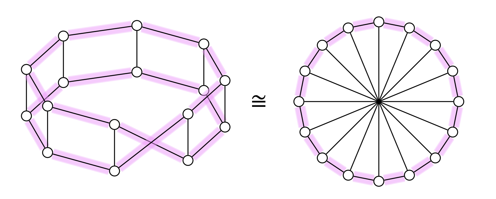
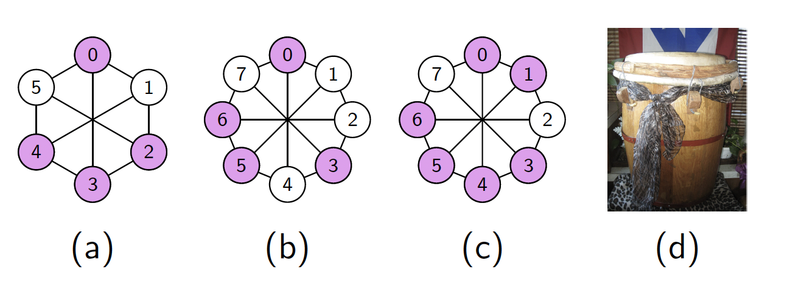
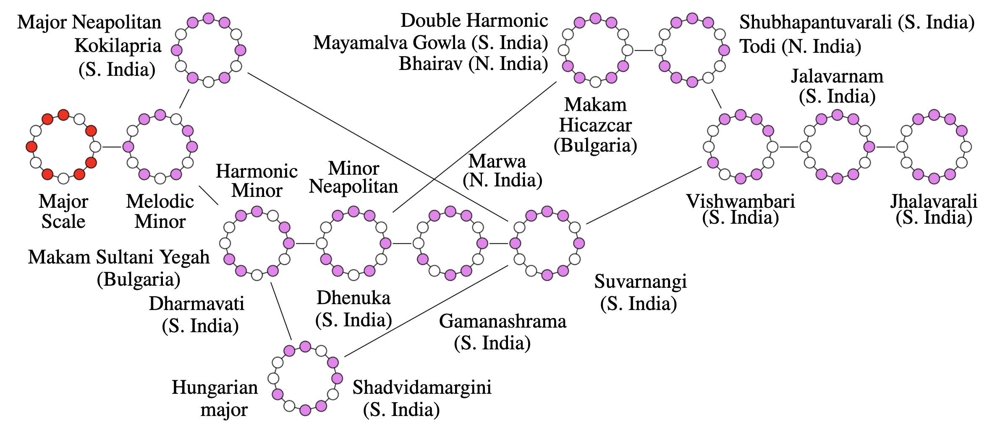
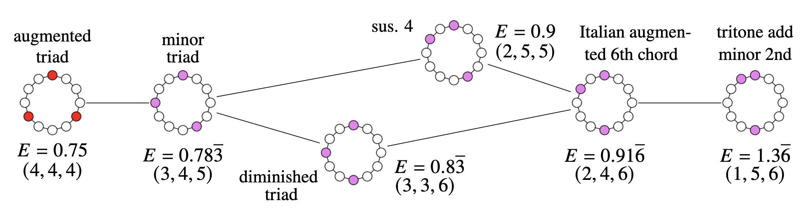

BRENT CODY
Associate ProfessorDepartment of Mathematics
and Applied Mathematics
Virginia Commonwealth University
bmcody@vcu.edu
Welcome to my website!
Research Overview
My main line of research is in set theory and involves large cardinals. I've done work on combinatorial principles and forcing constructions related to the large cardinal properties of Ramseyness, ineffability and indescribability. I've also worked on strong properties of successor cardinals that hold after collapsing large cardinals and on preserving large cardinals through Easton-support forcing iterations.
I also have an emerging interest in problems involving graph theory, finite combinatorics, discrete optimization and connections with music via maximal evenness and Euclidean rhythms (see [20] and [22] below).
Papers
- The \(k\)-general \(d\)-position problem for graphs. (with Garrett Moore) Submitted. (pdf)
- Maximal evenness in graphs. (with Neal Bushaw and Chris Leffler) Submitted. (pdf)
- Large cardinal ideals. Accepted chapter for Research Trends in Contemporary Logic, 49 pages. (pdf)
- The Music and Mathematics of Maximally Even Sets. (with Neal Bushaw, Luke Freeman and Tobias Whitaker) Proceedings of Bridges 2024: Mathematics, Art, Music, Architecture, Culture: pp. 61-68. (pdf)
- Two-cardinal derived topologies, indescribability and Ramseyness. (with Chris Lambie-Hanson and Jing Zhang) Accepted at Journal of Symbolic Logic. (pdf)
- Two-cardinal ideal operators and indescribability. (with Philip White) Annals of Pure and Applied Logic, 175 (8): Paper No. 103463, 17 pp., 2024. (pdf)
- Higher indescribability and derived topologies. Journal of Mathematical Logic 24 (1): Paper No. 2350001, 48 pp., 2024. (pdf)
- Sparse analytic systems. (with Sean Cox and Kayla Lee) Forum of Mathematics, Sigma, Paper No. e58, 9 pp., 2023. (pdf)
- Ideal operators and higher indescribability. (with Peter Holy) Journal of Symbolic Logic, 88 (2):835-873, 2023. (pdf)
- Forcing a \(\square(\kappa)\)-like principle to hold at a weakly compact cardinal. (with Victoria Gitman and Chris Lambie-Hanson) Annals of Pure and Applied Logic, 172 (7):102960, 26 pp., 2021. (pdf)
- A refinement of the Ramsey hierarchy via indescribability. Journal of Symbolic Logic, 85 (2):773-808, 2020. (pdf)
- Characterizations of the weakly compact ideal on \(P_\kappa\lambda\). Annals of Pure and Applied Logic, 171 (6):23 pages, 2020. (pdf)
- The weakly compact reflection principle need not imply a high order of weak compactness. (with Hiroshi Sakai) Archive for Mathematical Logic, 59 (1):179-196, 2020. (pdf)
- Adding a non-reflecting weakly compact set. Notre Dame Journal of Formal Logic, 60 (3):503-521, 2019. (pdf)
- Rigid ideals. (with Monroe Eskew) Israel Journal of Mathematics, 224 (1):343-366, 2018. (pdf)
- Indestructibility of generically strong cardinals. (with Sean Cox) Fundamenta Mathematicae, 232 (2):131-149, 2016. (pdf)
- The least weakly compact cardinal can be unfoldable, weakly measurable and nearly \(\theta\)-supercompact. (with Moti Gitik, Joel David Hamkins, and Jason Schanker) Archive for Mathematical Logic, 54 (5-6):491-510, 2015. (pdf)
- Easton's theorem for Ramsey and strongly Ramsey cardinals. (with Victoria Gitman) Annals of Pure and Applied Logic, 166 (9):934-952, 2015. (pdf)
- Easton functions and supercompactness. (with Sy Friedman and Radek Honzik) Fundamenta Mathematicae, 226 (3):279-296, 2014. (pdf)
- On Supercompactness and the continuum function. (with Menachem Magidor) Annals of Pure and Applied Logic, 165 (2):620-630, 2014. (pdf)
- Easton's Theorem in the presence of Woodin cardinals, Archive for Mathematical Logic, 52 (5-6):569-591, 2013. (pdf)
- Consecutive singular cardinals and the continuum function. (with A. W. Apter) Notre Dame Journal of Formal Logic, 54 (2):125-136, 2013. (pdf)
- The failure of GCH at a degree of supercompactness. Mathematical Logic Quarterly, 58 (1-2):83-94, 2012. (pdf)
Teaching
- MATH 201: Calculus with Analytic Geometry II (syllabi: spring 2022, fall 2020)
- MATH 300: Introduction to Mathematical Reasoning (syllabus: fall 2023)
- MATH 301: Differential Equations (syllabus: spring 2019)
- MATH 310: Linear Algebra (syllabi: spring 2022, spring 2019)
- MATH 407: Advanced Calculus (syllabus: fall 2021)
- MATH 409: General Topology (syllabus: fall 2019)
- MATH 490: Mathematical Expositions (syllabi: fall 2020, spring 2018)
- MATH 492: Independent Study (Spring 2015 computability theory and Gödel’s Incompleteness Theorems with Philip White; Fall 2014 forcing with Samuel Dworetzky; Spring 2014 set theory with Samuel Dworetzky
- MATH 493: Mathematical Sciences Internship (Spring 2016 with Lynh Tran, Spring 2018 with Tobechi Okoli)
- MATH 502: Abstract Algebra I (syllabus: fall 2023)
- MATH 591: Topics - Filters, ultrafilters and application (spring 2017, taught jointly with Sean Cox and Monroe Eskew)
- MATH 591: Topics - Logic and Mathematical Structures (spring 2014, taught jointly with Sean Cox, notes)
- MATH 602: Abstract Algebra II (syllabus: spring 2020)
- MATH 697: Directed Research (forcing and large cardinals with Philip White)
- MATH 698: Thesis (Philip White's thesis has been cited by Buhagiar and Dz̆amonja)
Some Diagrams + Audio
 Bomba is one of the oldest Puerto Rican musical traditions of African origin. In the following diagram taken from [20] (joint work with Bushaw, Freeman and Whitaker), we see some popular bomba rhythms that correspond to minimal energy subsets of Möbius ladders.
In the following diagram taken from [20] (joint work with Bushaw, Freeman and Whitaker), some heptatonic (i.e. seven note) scales are arranged in order of increasing energy from left to right. You can listen to the scales by clicking on the links below.

